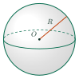
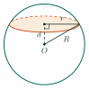

SpheresHình cầu
Grade 9 · Topic: Solid Shapes in Everyday LifeLớp 9 · Chủ đề: Một số hình khối trong thực tiễn
1Lesson IntroductionGiới thiệu bài học
Learning goalsMục tiêu bài học
By the end of this lesson you can:
Sau bài học này, em có thể:
recognize a sphere (ball), its surface, center, radius; know that every cross-section is a disk;
nhận biết được hình cầu, mặt cầu, tâm, bán kính; biết mặt cắt của hình cầu là hình tròn;
use \(S=4\pi R^2\) and \(V=\dfrac43\pi R^3\);
dùng được các công thức \(S=4\pi R^2\) và \(V=\dfrac43\pi R^3\);
compute areas and volumes of spheres and hemispheres;
tính được diện tích mặt cầu, thể tích hình cầu, nửa hình cầu;
solve combined problems (a ball in a box, a tank made of a cylinder and two hemispheres).
giải được bài toán kết hợp (quả bóng trong hộp hình trụ, bồn chứa gồm hình trụ và hai nửa hình cầu).
2Mathematical VocabularyTừ vựng Toán học
sphere (solid sphere, ball) – obtained by rotating a semicircle (half-disk) about its diameter.
Hình cầu – tạo thành khi quay nửa hình tròn một vòng quanh đường kính của nó.
surface of a sphere – the points at distance \(R\) from the center \(O\).
Mặt cầu – các điểm cách tâm \(O\) một khoảng bằng \(R\).
center, radius, diameter – \(O\), \(R\), \(2R\).
Tâm, bán kính, đường kính – \(O\), \(R\), \(2R\).
cross-section / great circle – the cut by a plane (a disk); the circle cut by a plane through \(O\).
Mặt cắt / đường tròn lớn – phần cắt bởi một mặt phẳng (hình tròn); đường tròn cắt bởi mặt phẳng đi qua \(O\).
hemisphere – half of a ball cut by a plane through the center.
Nửa hình cầu – một nửa hình cầu bị cắt bởi mặt phẳng đi qua tâm.
3Useful English PhrasesCụm từ tiếng Anh thường gặp
The ball has radius 3 cm.
Hình cầu có bán kính 3 cm.
The area of the surface of the sphere is \(4\pi R^2\).
Diện tích mặt cầu là \(4\pi R^2\).
The volume of the ball is \(\dfrac43\pi R^3\).
Thể tích hình cầu là \(\dfrac43\pi R^3\).
A plane cuts the sphere in a circle.
Mặt phẳng cắt mặt cầu theo một đường tròn.
The dome has the shape of a hemisphere.
Mái vòm có dạng nửa hình cầu.
4Prerequisite ReviewÔn tập kiến thức nền
Lesson 31. Cylinder: \(V=\pi r^2h\).
Bài 31. Hình trụ: \(V=\pi r^2h\).
Pythagoras. \(R^2=d^2+r^2\) in a right triangle with hypotenuse \(R\).
Định lí Pythagore. \(R^2=d^2+r^2\) trong tam giác vuông có cạnh huyền \(R\).
5TheoryLý thuyết
5.1 The sphereHình cầu
DefinitionĐịnh nghĩa
Rotating a half-disk one full turn about its diameter \(AB\) gives a ball (a sphere); its boundary is the surface of the sphere. The midpoint \(O\) of \(AB\) is the center, \(R=OA\) the radius.
Quay nửa hình tròn một vòng quanh đường kính \(AB\) cố định ta được một hình cầu; phần mặt bao quanh là mặt cầu. Trung điểm \(O\) của \(AB\) là tâm, \(R=OA\) là bán kính.
Every plane cutting the ball gives a disk. If the plane is at distance \(d\lt R\) from \(O\), the radius of the cross-section is \(r=\sqrt{R^2-d^2}\); if it passes through \(O\) we get a great circle (radius \(R\)).
Mọi mặt phẳng cắt hình cầu đều cho mặt cắt là một hình tròn. Nếu mặt phẳng cách \(O\) một khoảng \(d\lt R\) thì bán kính mặt cắt là \(r=\sqrt{R^2-d^2}\); nếu mặt phẳng đi qua \(O\) ta được đường tròn lớn (bán kính \(R\)).


5.2 Surface area and volumeDiện tích mặt cầu và thể tích hình cầu
FormulasCông thức
Hemisphere: curved surface \(2\pi R^2\), volume \(\dfrac23\pi R^3\).
Nửa hình cầu: mặt cong \(2\pi R^2\), thể tích \(\dfrac23\pi R^3\).
NoteChú ý
A ball fitting exactly in a cylinder (radius \(R\), height \(2R\)) fills \(\dfrac{\dfrac43\pi R^3}{2\pi R^3}=\dfrac23\) of it.
Hình cầu đặt vừa khít trong hình trụ (bán kính \(R\), chiều cao \(2R\)) chiếm \(\dfrac{\dfrac43\pi R^3}{2\pi R^3}=\dfrac23\) thể tích hình trụ.
6Worked ExamplesVí dụ có lời giải
ExampleVí dụ 1RememberingNhận biết – Sphere or not?Hình cầu?
Which objects have the shape of a sphere: a football, a can of milk, an orange, a conical hat? A plane through the center of a ball of radius 5 cm cuts it; what is the cross-section?
Vật nào có dạng hình cầu: quả bóng đá, hộp sữa, quả cam, chiếc nón lá? Một mặt phẳng đi qua tâm cắt hình cầu bán kính 5 cm; mặt cắt là hình gì?
Analysis: Cans are cylinders, conical hats are cones.
Phân tích: Hộp sữa là hình trụ, nón lá là hình nón.
The football and the orange. The cross-section is a disk bounded by a great circle of radius 5 cm.
Quả bóng đá và quả cam. Mặt cắt là hình tròn giới hạn bởi đường tròn lớn bán kính 5 cm.
Football, orange; a disk of radius 5 cm.
Quả bóng đá, quả cam; hình tròn bán kính 5 cm.
ExampleVí dụ 2UnderstandingThông hiểu – Area and volumeDiện tích và thể tích
A ball has radius 3 cm. Find the area of its surface and its volume.
Một hình cầu có bán kính 3 cm. Tính diện tích mặt cầu và thể tích hình cầu.
Analysis: \(S=4\pi R^2\), \(V=\dfrac43\pi R^3\).
Phân tích: \(S=4\pi R^2\), \(V=\dfrac43\pi R^3\).
\(S=4\pi\cdot9=36\pi\approx113.1\) cm².
\(S=4\pi\cdot9=36\pi\approx113{,}1\) cm².
\(V=\dfrac43\pi\cdot27=36\pi\approx113.1\) cm³.
\(V=\dfrac43\pi\cdot27=36\pi\approx113{,}1\) cm³.
\(36\pi\) cm²; \(36\pi\) cm³.
\(36\pi\) cm²; \(36\pi\) cm³.
ExampleVí dụ 3Basic applicationVận dụng thấp – A cross-sectionMặt cắt
A ball of radius 5 cm is cut by a plane at distance 3 cm from its center. Find the radius and the area of the cross-section.
Một hình cầu bán kính 5 cm bị cắt bởi mặt phẳng cách tâm 3 cm. Tính bán kính và diện tích mặt cắt.
Analysis: \(r=\sqrt{R^2-d^2}\).
Phân tích: \(r=\sqrt{R^2-d^2}\).
\(r=\sqrt{5^2-3^2}=4\) cm; area \(\pi\cdot4^2=16\pi\) cm².
\(r=\sqrt{5^2-3^2}=4\) cm; diện tích \(\pi\cdot4^2=16\pi\) cm².
4 cm; \(16\pi\) cm².
4 cm; \(16\pi\) cm².
ExampleVí dụ 4Basic applicationVận dụng thấp – A hemisphere bowlCái bát nửa hình cầu
A bowl has the shape of a hemisphere of radius 3 dm.
(a) How many liters of water can it hold?
(b) Find the area of its inside surface. (\(1\text{ dm}^3=1\) liter.)
Một cái bát có dạng nửa hình cầu bán kính 3 dm.
a) Bát chứa được bao nhiêu lít nước?
b) Tính diện tích mặt trong của bát. (\(1\text{ dm}^3=1\) lít.)
Analysis: Half of the ball, half of the sphere surface.
Phân tích: Một nửa thể tích hình cầu, một nửa diện tích mặt cầu.
(a) \(V=\dfrac23\pi\cdot3^3=18\pi\approx56.5\) liters.
a) \(V=\dfrac23\pi\cdot3^3=18\pi\approx56{,}5\) lít.
(b) \(S=2\pi\cdot3^2=18\pi\approx56.5\) dm².
b) \(S=2\pi\cdot3^2=18\pi\approx56{,}5\) dm².
(a) about 56.5 liters;
(b) about 56.5 dm².
a) khoảng 56,5 lít;
b) khoảng 56,5 dm².
ExampleVí dụ 5ApplicationVận dụng – A ball in a box; a gas tankBóng trong hộp; bồn chứa
(a) A ball of radius 3 cm fits exactly in a cylindrical box. What fraction of the box is empty?
(b) A gas tank is a cylinder of radius 3 dm and length 10 dm with a hemisphere of radius 3 dm at each end. Find its volume.
a) Một quả bóng bán kính 3 cm đặt vừa khít trong hộp hình trụ. Phần trống chiếm bao nhiêu phần thể tích hộp?
b) Một bồn chứa gồm hình trụ bán kính 3 dm, dài 10 dm và hai nửa hình cầu bán kính 3 dm ở hai đầu. Tính thể tích bồn.
Analysis: The box has radius 3 and height 6; two hemispheres make one ball.
Phân tích: Hộp có bán kính 3, chiều cao 6; hai nửa hình cầu ghép thành một hình cầu.
(a) Box \(\pi\cdot9\cdot6=54\pi\), ball \(36\pi\); empty \(18\pi\), that is \(\dfrac{18}{54}=\dfrac13\) of the box.
a) Hộp \(\pi\cdot9\cdot6=54\pi\), bóng \(36\pi\); phần trống \(18\pi\), tức \(\dfrac{18}{54}=\dfrac13\) hộp.
(b) \(V=\pi\cdot3^2\cdot10+\dfrac43\pi\cdot3^3=90\pi+36\pi=126\pi\approx395.8\) dm³.
b) \(V=\pi\cdot3^2\cdot10+\dfrac43\pi\cdot3^3=90\pi+36\pi=126\pi\approx395{,}8\) dm³.
(a) \(\dfrac13\);
(b) \(126\pi\approx395.8\) dm³.
a) \(\dfrac13\);
b) \(126\pi\approx395{,}8\) dm³.
7PracticeBài tập luyện tập
A. Multiple ChoiceA. Trắc nghiệm nhiều lựa chọn
A sphere has radius 11 cm. Find the area of its surface.
Một hình cầu có bán kính 11 cm. Tính diện tích mặt cầu.
Answer: b. \(S=4\pi R^2=4\pi\cdot11^2=484\pi\text{ cm}^2\).
Đáp án b. \(S=4\pi R^2=4\pi\cdot11^2=484\pi\text{ cm}^2\).
Find the volume of a ball of radius 3 cm.
Tính thể tích hình cầu bán kính 3 cm.
Answer: c. \(V=\dfrac43\pi R^3=\dfrac43\pi\cdot3^3=36\pi\text{ cm}^3\).
Đáp án c. \(V=\dfrac43\pi R^3=\dfrac43\pi\cdot3^3=36\pi\text{ cm}^3\).
A plane at distance 12 cm from the center of a sphere of radius 15 cm cuts the sphere. Find the radius of the cross-section.
Một mặt phẳng cách tâm hình cầu bán kính 15 cm một khoảng 12 cm cắt hình cầu. Tính bán kính của mặt cắt.
Answer: a. The cross-section is a circle of radius \(\sqrt{R^2-d^2}=\sqrt{15^2-12^2}=9\) cm.
Đáp án a. Mặt cắt là hình tròn bán kính \(\sqrt{R^2-d^2}=\sqrt{15^2-12^2}=9\) cm.
B. True or FalseB. Đúng hoặc sai
A ball of radius 8 cm has surface area \(256\pi\text{ cm}^2\).
Hình cầu bán kính 8 cm có diện tích mặt cầu là \(256\pi\text{ cm}^2\).
True. \(4\pi R^2=256\pi\text{ cm}^2\).
Đúng. \(4\pi R^2=256\pi\text{ cm}^2\).
A hemisphere of radius 12 cm has volume \(1152\pi\text{ cm}^3\).
Nửa hình cầu bán kính 12 cm có thể tích \(1152\pi\text{ cm}^3\).
True. \(\dfrac12\cdot\dfrac43\pi R^3=\dfrac23\pi\cdot12^3=1152\pi\text{ cm}^3\).
Đúng. \(\dfrac12\cdot\dfrac43\pi R^3=\dfrac23\pi\cdot12^3=1152\pi\text{ cm}^3\).
C. Short AnswerC. Trả lời ngắn
A ball has diameter 10 cm. Its surface area is \(k\pi\) cm². Find \(k\).
Một quả bóng có đường kính 10 cm. Diện tích mặt cầu là \(k\pi\) cm². Tìm \(k\).
Enter a number.
Nhập một số.
Answer: 100. \(R=5\); \(S=4\pi\cdot5^2=100\pi\).
Đáp số: 100. \(R=5\); \(S=4\pi\cdot5^2=100\pi\).
A ball has radius 9 cm. Its volume is \(k\pi\) cm³. Find \(k\).
Hình cầu có bán kính 9 cm. Thể tích là \(k\pi\) cm³. Tìm \(k\).
Enter a number.
Nhập một số.
Answer: 972. \(V=\dfrac43\pi\cdot9^3=972\pi\).
Đáp số: 972. \(V=\dfrac43\pi\cdot9^3=972\pi\).
D1. Self-practice – RememberingD1. Tự luyện – Mức Nhận biết
A plane through the center of a sphere cuts its surface in…
Mặt phẳng đi qua tâm cắt mặt cầu theo…
Answer: d. The cross-section through the center is a great circle.
Đáp án d. Mặt cắt qua tâm là đường tròn lớn.
Which formula gives the volume of a ball of radius \(R\)?
Công thức nào cho thể tích hình cầu bán kính \(R\)?
Answer: b. \(V=\dfrac43\pi R^3\).
Đáp án b. \(V=\dfrac43\pi R^3\).
A ball has diameter 12 cm. What is its radius?
Một hình cầu có đường kính 12 cm. Bán kính của nó là bao nhiêu?
Answer: d. \(R=\dfrac{d}{2}=6\) cm.
Đáp án d. \(R=\dfrac{d}{2}=6\) cm.
D2. Self-practice – UnderstandingD2. Tự luyện – Mức Thông hiểu
The radius of a ball is multiplied by 3. Its surface area is multiplied by…
Bán kính hình cầu tăng gấp 3 lần. Diện tích mặt cầu tăng gấp bao nhiêu lần?
Answer: c. \(S\) is proportional to \(R^2\), \(V\) to \(R^3\): factor \(9\).
Đáp án c. \(S\) tỉ lệ với \(R^2\), \(V\) tỉ lệ với \(R^3\): gấp \(9\) lần.
The surface of a sphere has area \(576\pi\text{ cm}^2\). Find the radius.
Mặt cầu có diện tích \(576\pi\text{ cm}^2\). Tính bán kính hình cầu.
Answer: a. \(4\pi R^2=576\pi\Rightarrow R^2=144\Rightarrow R=12\) cm.
Đáp án a. \(4\pi R^2=576\pi\Rightarrow R^2=144\Rightarrow R=12\) cm.
A solid hemisphere of radius 3 cm (curved surface and flat base). Find its total surface area.
Một khối nửa hình cầu bán kính 3 cm (gồm mặt cong và mặt đáy phẳng). Tính diện tích toàn phần.
Answer: b. Curved part \(2\pi R^2\), base \(\pi R^2\): total \(3\pi R^2=27\pi\text{ cm}^2\).
Đáp án b. Mặt cong \(2\pi R^2\), mặt đáy \(\pi R^2\): tổng \(3\pi R^2=27\pi\text{ cm}^2\).
D3. Self-practice – Basic applicationD3. Tự luyện – Mức Vận dụng thấp
A ball of radius 6 cm fits exactly in a cylindrical box (it touches the two bases and the side). What fraction of the box does the ball fill?
Một quả bóng bán kính 6 cm đặt vừa khít trong một hộp hình trụ (tiếp xúc với hai đáy và mặt xung quanh). Quả bóng chiếm bao nhiêu phần thể tích hộp?
Answer: a. Box: \(\pi R^2\cdot2R=2\pi R^3\); ball: \(\dfrac43\pi R^3\); ratio \(\dfrac23\).
Đáp án a. Hộp: \(\pi R^2\cdot2R=2\pi R^3\); bóng: \(\dfrac43\pi R^3\); tỉ số \(\dfrac23\).
A gas tank is a cylinder (radius 3 dm, length 6 dm) with a hemisphere of the same radius at each end. Find its volume.
Một bồn chứa gồm một hình trụ (bán kính 3 dm, dài 6 dm) và hai nửa hình cầu cùng bán kính ở hai đầu. Tính thể tích bồn.
Answer: d. Cylinder \(\pi\cdot3^2\cdot6=54\pi\); two hemispheres = one ball \(\dfrac43\pi\cdot3^3=36\pi\); total \(90\pi\text{ dm}^3\).
Đáp án d. Hình trụ \(\pi\cdot3^2\cdot6=54\pi\); hai nửa hình cầu = một hình cầu \(\dfrac43\pi\cdot3^3=36\pi\); tổng \(90\pi\text{ dm}^3\).
A sphere has surface area \(36\pi\text{ cm}^2\). Find the length of a great circle.
Mặt cầu có diện tích \(36\pi\text{ cm}^2\). Tính độ dài một đường tròn lớn.
Answer: d. \(R=3\); great circle \(2\pi R=6\pi\text{ cm}\).
Đáp án d. \(R=3\); đường tròn lớn \(2\pi R=6\pi\text{ cm}\).
D4. Self-practice – Advanced applicationD4. Tự luyện – Mức Vận dụng
Three tennis balls of radius 3 cm fit exactly in a cylindrical tube (they touch the side, each other and the two ends). Find the empty volume in the tube.
Ba quả bóng tennis bán kính 3 cm đặt vừa khít trong một hộp hình trụ (tiếp xúc mặt xung quanh, tiếp xúc nhau và tiếp xúc hai đáy). Tính thể tích phần không gian trống trong hộp.
Answer: b. Tube: \(\pi\cdot3^2\cdot18=162\pi\); balls: \(3\cdot\dfrac43\pi\cdot3^3=108\pi\); empty \(54\pi\text{ cm}^3\).
Đáp án b. Hộp: \(\pi\cdot3^2\cdot18=162\pi\); ba quả bóng: \(3\cdot\dfrac43\pi\cdot3^3=108\pi\); phần trống \(54\pi\text{ cm}^3\).
A metal ball of radius 12 cm is melted and recast into small balls of radius 4 cm. How many small balls are made?
Nấu chảy một quả cầu kim loại bán kính 12 cm để đúc thành các viên bi bán kính 4 cm. Đúc được bao nhiêu viên bi?
Answer: d. \(\dfrac{\dfrac43\pi\cdot12^3}{\dfrac43\pi\cdot4^3}=\left(\dfrac{12}{4}\right)^3=27\).
Đáp án d. \(\dfrac{\dfrac43\pi\cdot12^3}{\dfrac43\pi\cdot4^3}=\left(\dfrac{12}{4}\right)^3=27\).
The roof of a planetarium is a hemisphere with diameter 4 m. Painting costs 250 thousand VND per m². How much does it cost to paint the outside of the roof? (\(\pi\approx3.14\))
Mái vòm của một nhà chiếu hình vũ trụ có dạng nửa mặt cầu đường kính 4 m. Sơn mỗi mét vuông tốn 250 nghìn đồng. Chi phí sơn mặt ngoài mái vòm là bao nhiêu? (\(\pi\approx3{,}14\))
Answer: c. \(S=2\pi R^2\approx2\cdot3.14\cdot2^2=25.12\) m²; cost \(6280\) thousand VND.
Đáp án c. \(S=2\pi R^2\approx2\cdot3{,}14\cdot2^2=25{,}12\) m²; chi phí \(6280\) nghìn đồng.
A. Multiple ChoiceA. Trắc nghiệm nhiều lựa chọn
A sphere has radius 7 cm. Find the area of its surface.
Một hình cầu có bán kính 7 cm. Tính diện tích mặt cầu.
Answer: a. \(S=4\pi R^2=4\pi\cdot7^2=196\pi\text{ cm}^2\).
Đáp án a. \(S=4\pi R^2=4\pi\cdot7^2=196\pi\text{ cm}^2\).
Find the volume of a ball of radius 9 cm.
Tính thể tích hình cầu bán kính 9 cm.
Answer: d. \(V=\dfrac43\pi R^3=\dfrac43\pi\cdot9^3=972\pi\text{ cm}^3\).
Đáp án d. \(V=\dfrac43\pi R^3=\dfrac43\pi\cdot9^3=972\pi\text{ cm}^3\).
A plane at distance 8 cm from the center of a sphere of radius 17 cm cuts the sphere. Find the radius of the cross-section.
Một mặt phẳng cách tâm hình cầu bán kính 17 cm một khoảng 8 cm cắt hình cầu. Tính bán kính của mặt cắt.
Answer: d. The cross-section is a circle of radius \(\sqrt{R^2-d^2}=\sqrt{17^2-8^2}=15\) cm.
Đáp án d. Mặt cắt là hình tròn bán kính \(\sqrt{R^2-d^2}=\sqrt{17^2-8^2}=15\) cm.
B. True or FalseB. Đúng hoặc sai
A ball of radius 2 cm has surface area \(32\pi\text{ cm}^2\).
Hình cầu bán kính 2 cm có diện tích mặt cầu là \(32\pi\text{ cm}^2\).
False. \(4\pi R^2=16\pi\text{ cm}^2\).
Sai. \(4\pi R^2=16\pi\text{ cm}^2\).
A hemisphere of radius 12 cm has volume \(576\pi\text{ cm}^3\).
Nửa hình cầu bán kính 12 cm có thể tích \(576\pi\text{ cm}^3\).
False. \(\dfrac12\cdot\dfrac43\pi R^3=\dfrac23\pi\cdot12^3=1152\pi\text{ cm}^3\).
Sai. \(\dfrac12\cdot\dfrac43\pi R^3=\dfrac23\pi\cdot12^3=1152\pi\text{ cm}^3\).
C. Short AnswerC. Trả lời ngắn
A ball has diameter 4 cm. Its surface area is \(k\pi\) cm². Find \(k\).
Một quả bóng có đường kính 4 cm. Diện tích mặt cầu là \(k\pi\) cm². Tìm \(k\).
Enter a number.
Nhập một số.
Answer: 16. \(R=2\); \(S=4\pi\cdot2^2=16\pi\).
Đáp số: 16. \(R=2\); \(S=4\pi\cdot2^2=16\pi\).
A ball has radius 3 cm. Its volume is \(k\pi\) cm³. Find \(k\).
Hình cầu có bán kính 3 cm. Thể tích là \(k\pi\) cm³. Tìm \(k\).
Enter a number.
Nhập một số.
Answer: 36. \(V=\dfrac43\pi\cdot3^3=36\pi\).
Đáp số: 36. \(V=\dfrac43\pi\cdot3^3=36\pi\).
D1. Self-practice – RememberingD1. Tự luyện – Mức Nhận biết
The set of all points in space at distance \(R\) from a point \(O\) is…
Tập hợp tất cả các điểm trong không gian cách điểm \(O\) một khoảng \(R\) là…
Answer: a. Points at distance exactly \(R\) form the surface of the sphere; the solid ball also contains the inside points.
Đáp án a. Các điểm cách \(O\) đúng \(R\) tạo thành mặt cầu; hình cầu (khối) gồm cả các điểm bên trong.
Which formula gives the area of the surface of a sphere of radius \(R\)?
Công thức nào cho diện tích mặt cầu bán kính \(R\)?
Answer: d. \(S=4\pi R^2\).
Đáp án d. \(S=4\pi R^2\).
A ball has diameter 34 cm. What is its radius?
Một hình cầu có đường kính 34 cm. Bán kính của nó là bao nhiêu?
Answer: d. \(R=\dfrac{d}{2}=17\) cm.
Đáp án d. \(R=\dfrac{d}{2}=17\) cm.
D2. Self-practice – UnderstandingD2. Tự luyện – Mức Thông hiểu
The radius of a ball is multiplied by 3. Its volume is multiplied by…
Bán kính hình cầu tăng gấp 3 lần. Thể tích hình cầu tăng gấp bao nhiêu lần?
Answer: d. \(S\) is proportional to \(R^2\), \(V\) to \(R^3\): factor \(27\).
Đáp án d. \(S\) tỉ lệ với \(R^2\), \(V\) tỉ lệ với \(R^3\): gấp \(27\) lần.
The surface of a sphere has area \(484\pi\text{ cm}^2\). Find the radius.
Mặt cầu có diện tích \(484\pi\text{ cm}^2\). Tính bán kính hình cầu.
Answer: c. \(4\pi R^2=484\pi\Rightarrow R^2=121\Rightarrow R=11\) cm.
Đáp án c. \(4\pi R^2=484\pi\Rightarrow R^2=121\Rightarrow R=11\) cm.
A solid hemisphere of radius 8 cm (curved surface and flat base). Find its total surface area.
Một khối nửa hình cầu bán kính 8 cm (gồm mặt cong và mặt đáy phẳng). Tính diện tích toàn phần.
Answer: c. Curved part \(2\pi R^2\), base \(\pi R^2\): total \(3\pi R^2=192\pi\text{ cm}^2\).
Đáp án c. Mặt cong \(2\pi R^2\), mặt đáy \(\pi R^2\): tổng \(3\pi R^2=192\pi\text{ cm}^2\).
D3. Self-practice – Basic applicationD3. Tự luyện – Mức Vận dụng thấp
A ball of radius 3 cm fits exactly in a cylindrical box (it touches the two bases and the side). What fraction of the box does the ball fill?
Một quả bóng bán kính 3 cm đặt vừa khít trong một hộp hình trụ (tiếp xúc với hai đáy và mặt xung quanh). Quả bóng chiếm bao nhiêu phần thể tích hộp?
Answer: b. Box: \(\pi R^2\cdot2R=2\pi R^3\); ball: \(\dfrac43\pi R^3\); ratio \(\dfrac23\).
Đáp án b. Hộp: \(\pi R^2\cdot2R=2\pi R^3\); bóng: \(\dfrac43\pi R^3\); tỉ số \(\dfrac23\).
A gas tank is a cylinder (radius 9 dm, length 8 dm) with a hemisphere of the same radius at each end. Find its volume.
Một bồn chứa gồm một hình trụ (bán kính 9 dm, dài 8 dm) và hai nửa hình cầu cùng bán kính ở hai đầu. Tính thể tích bồn.
Answer: b. Cylinder \(\pi\cdot9^2\cdot8=648\pi\); two hemispheres = one ball \(\dfrac43\pi\cdot9^3=972\pi\); total \(1620\pi\text{ dm}^3\).
Đáp án b. Hình trụ \(\pi\cdot9^2\cdot8=648\pi\); hai nửa hình cầu = một hình cầu \(\dfrac43\pi\cdot9^3=972\pi\); tổng \(1620\pi\text{ dm}^3\).
A sphere has surface area \(900\pi\text{ cm}^2\). Find the length of a great circle.
Mặt cầu có diện tích \(900\pi\text{ cm}^2\). Tính độ dài một đường tròn lớn.
Answer: a. \(R=15\); great circle \(2\pi R=30\pi\text{ cm}\).
Đáp án a. \(R=15\); đường tròn lớn \(2\pi R=30\pi\text{ cm}\).
D4. Self-practice – Advanced applicationD4. Tự luyện – Mức Vận dụng
Three tennis balls of radius 2 cm fit exactly in a cylindrical tube (they touch the side, each other and the two ends). Find the empty volume in the tube.
Ba quả bóng tennis bán kính 2 cm đặt vừa khít trong một hộp hình trụ (tiếp xúc mặt xung quanh, tiếp xúc nhau và tiếp xúc hai đáy). Tính thể tích phần không gian trống trong hộp.
Answer: d. Tube: \(\pi\cdot2^2\cdot12=48\pi\); balls: \(3\cdot\dfrac43\pi\cdot2^3=32\pi\); empty \(16\pi\text{ cm}^3\).
Đáp án d. Hộp: \(\pi\cdot2^2\cdot12=48\pi\); ba quả bóng: \(3\cdot\dfrac43\pi\cdot2^3=32\pi\); phần trống \(16\pi\text{ cm}^3\).
A metal ball of radius 8 cm is melted and recast into small balls of radius 2 cm. How many small balls are made?
Nấu chảy một quả cầu kim loại bán kính 8 cm để đúc thành các viên bi bán kính 2 cm. Đúc được bao nhiêu viên bi?
Answer: a. \(\dfrac{\dfrac43\pi\cdot8^3}{\dfrac43\pi\cdot2^3}=\left(\dfrac{8}{2}\right)^3=64\).
Đáp án a. \(\dfrac{\dfrac43\pi\cdot8^3}{\dfrac43\pi\cdot2^3}=\left(\dfrac{8}{2}\right)^3=64\).
The roof of a planetarium is a hemisphere with diameter 10 m. Painting costs 100 thousand VND per m². How much does it cost to paint the outside of the roof? (\(\pi\approx3.14\))
Mái vòm của một nhà chiếu hình vũ trụ có dạng nửa mặt cầu đường kính 10 m. Sơn mỗi mét vuông tốn 100 nghìn đồng. Chi phí sơn mặt ngoài mái vòm là bao nhiêu? (\(\pi\approx3{,}14\))
Answer: a. \(S=2\pi R^2\approx2\cdot3.14\cdot5^2=157\) m²; cost \(15700\) thousand VND.
Đáp án a. \(S=2\pi R^2\approx2\cdot3{,}14\cdot5^2=157\) m²; chi phí \(15700\) nghìn đồng.
A. Multiple ChoiceA. Trắc nghiệm nhiều lựa chọn
A sphere has diameter 20 cm. Find the area of its surface.
Một hình cầu có đường kính 20 cm. Tính diện tích mặt cầu.
Answer: d. \(S=4\pi R^2=4\pi\cdot10^2=400\pi\text{ cm}^2\).
Đáp án d. \(S=4\pi R^2=4\pi\cdot10^2=400\pi\text{ cm}^2\).
Find the volume of a ball of radius 6 cm.
Tính thể tích hình cầu bán kính 6 cm.
Answer: d. \(V=\dfrac43\pi R^3=\dfrac43\pi\cdot6^3=288\pi\text{ cm}^3\).
Đáp án d. \(V=\dfrac43\pi R^3=\dfrac43\pi\cdot6^3=288\pi\text{ cm}^3\).
A plane at distance 7 cm from the center of a sphere of radius 25 cm cuts the sphere. Find the radius of the cross-section.
Một mặt phẳng cách tâm hình cầu bán kính 25 cm một khoảng 7 cm cắt hình cầu. Tính bán kính của mặt cắt.
Answer: d. The cross-section is a circle of radius \(\sqrt{R^2-d^2}=\sqrt{25^2-7^2}=24\) cm.
Đáp án d. Mặt cắt là hình tròn bán kính \(\sqrt{R^2-d^2}=\sqrt{25^2-7^2}=24\) cm.
B. True or FalseB. Đúng hoặc sai
A ball of radius 7 cm has surface area \(392\pi\text{ cm}^2\).
Hình cầu bán kính 7 cm có diện tích mặt cầu là \(392\pi\text{ cm}^2\).
False. \(4\pi R^2=196\pi\text{ cm}^2\).
Sai. \(4\pi R^2=196\pi\text{ cm}^2\).
A hemisphere of radius 9 cm has volume \(486\pi\text{ cm}^3\).
Nửa hình cầu bán kính 9 cm có thể tích \(486\pi\text{ cm}^3\).
True. \(\dfrac12\cdot\dfrac43\pi R^3=\dfrac23\pi\cdot9^3=486\pi\text{ cm}^3\).
Đúng. \(\dfrac12\cdot\dfrac43\pi R^3=\dfrac23\pi\cdot9^3=486\pi\text{ cm}^3\).
C. Short AnswerC. Trả lời ngắn
A ball has diameter 16 cm. Its surface area is \(k\pi\) cm². Find \(k\).
Một quả bóng có đường kính 16 cm. Diện tích mặt cầu là \(k\pi\) cm². Tìm \(k\).
Enter a number.
Nhập một số.
Answer: 256. \(R=8\); \(S=4\pi\cdot8^2=256\pi\).
Đáp số: 256. \(R=8\); \(S=4\pi\cdot8^2=256\pi\).
A ball has radius 6 cm. Its volume is \(k\pi\) cm³. Find \(k\).
Hình cầu có bán kính 6 cm. Thể tích là \(k\pi\) cm³. Tìm \(k\).
Enter a number.
Nhập một số.
Answer: 288. \(V=\dfrac43\pi\cdot6^3=288\pi\).
Đáp số: 288. \(V=\dfrac43\pi\cdot6^3=288\pi\).
D1. Self-practice – RememberingD1. Tự luyện – Mức Nhận biết
Every plane cutting a ball (and not just touching it) gives a cross-section that is…
Mọi mặt phẳng cắt hình cầu (không chỉ tiếp xúc) đều cho mặt cắt là…
Answer: d. The cross-section of a ball is always a disk.
Đáp án d. Mặt cắt của hình cầu luôn là một hình tròn.
Which formula gives the volume of a hemisphere of radius \(R\)?
Công thức nào cho thể tích nửa hình cầu bán kính \(R\)?
Answer: c. \(V=\dfrac23\pi R^3\).
Đáp án c. \(V=\dfrac23\pi R^3\).
A ball has diameter 14 cm. What is its radius?
Một hình cầu có đường kính 14 cm. Bán kính của nó là bao nhiêu?
Answer: d. \(R=\dfrac{d}{2}=7\) cm.
Đáp án d. \(R=\dfrac{d}{2}=7\) cm.
D2. Self-practice – UnderstandingD2. Tự luyện – Mức Thông hiểu
The radius of a ball is multiplied by 2. Its volume is multiplied by…
Bán kính hình cầu tăng gấp 2 lần. Thể tích hình cầu tăng gấp bao nhiêu lần?
Answer: a. \(S\) is proportional to \(R^2\), \(V\) to \(R^3\): factor \(8\).
Đáp án a. \(S\) tỉ lệ với \(R^2\), \(V\) tỉ lệ với \(R^3\): gấp \(8\) lần.
The surface of a sphere has area \(100\pi\text{ cm}^2\). Find the radius.
Mặt cầu có diện tích \(100\pi\text{ cm}^2\). Tính bán kính hình cầu.
Answer: c. \(4\pi R^2=100\pi\Rightarrow R^2=25\Rightarrow R=5\) cm.
Đáp án c. \(4\pi R^2=100\pi\Rightarrow R^2=25\Rightarrow R=5\) cm.
A solid hemisphere of radius 5 cm (curved surface and flat base). Find its total surface area.
Một khối nửa hình cầu bán kính 5 cm (gồm mặt cong và mặt đáy phẳng). Tính diện tích toàn phần.
Answer: d. Curved part \(2\pi R^2\), base \(\pi R^2\): total \(3\pi R^2=75\pi\text{ cm}^2\).
Đáp án d. Mặt cong \(2\pi R^2\), mặt đáy \(\pi R^2\): tổng \(3\pi R^2=75\pi\text{ cm}^2\).
D3. Self-practice – Basic applicationD3. Tự luyện – Mức Vận dụng thấp
A ball of radius 8 cm fits exactly in a cylindrical box (it touches the two bases and the side). What fraction of the box does the ball fill?
Một quả bóng bán kính 8 cm đặt vừa khít trong một hộp hình trụ (tiếp xúc với hai đáy và mặt xung quanh). Quả bóng chiếm bao nhiêu phần thể tích hộp?
Answer: c. Box: \(\pi R^2\cdot2R=2\pi R^3\); ball: \(\dfrac43\pi R^3\); ratio \(\dfrac23\).
Đáp án c. Hộp: \(\pi R^2\cdot2R=2\pi R^3\); bóng: \(\dfrac43\pi R^3\); tỉ số \(\dfrac23\).
A gas tank is a cylinder (radius 9 dm, length 10 dm) with a hemisphere of the same radius at each end. Find its volume.
Một bồn chứa gồm một hình trụ (bán kính 9 dm, dài 10 dm) và hai nửa hình cầu cùng bán kính ở hai đầu. Tính thể tích bồn.
Answer: a. Cylinder \(\pi\cdot9^2\cdot10=810\pi\); two hemispheres = one ball \(\dfrac43\pi\cdot9^3=972\pi\); total \(1782\pi\text{ dm}^3\).
Đáp án a. Hình trụ \(\pi\cdot9^2\cdot10=810\pi\); hai nửa hình cầu = một hình cầu \(\dfrac43\pi\cdot9^3=972\pi\); tổng \(1782\pi\text{ dm}^3\).
A sphere has surface area \(324\pi\text{ cm}^2\). Find the length of a great circle.
Mặt cầu có diện tích \(324\pi\text{ cm}^2\). Tính độ dài một đường tròn lớn.
Answer: d. \(R=9\); great circle \(2\pi R=18\pi\text{ cm}\).
Đáp án d. \(R=9\); đường tròn lớn \(2\pi R=18\pi\text{ cm}\).
D4. Self-practice – Advanced applicationD4. Tự luyện – Mức Vận dụng
Three tennis balls of radius 5 cm fit exactly in a cylindrical tube (they touch the side, each other and the two ends). Find the empty volume in the tube.
Ba quả bóng tennis bán kính 5 cm đặt vừa khít trong một hộp hình trụ (tiếp xúc mặt xung quanh, tiếp xúc nhau và tiếp xúc hai đáy). Tính thể tích phần không gian trống trong hộp.
Answer: b. Tube: \(\pi\cdot5^2\cdot30=750\pi\); balls: \(3\cdot\dfrac43\pi\cdot5^3=500\pi\); empty \(250\pi\text{ cm}^3\).
Đáp án b. Hộp: \(\pi\cdot5^2\cdot30=750\pi\); ba quả bóng: \(3\cdot\dfrac43\pi\cdot5^3=500\pi\); phần trống \(250\pi\text{ cm}^3\).
A metal ball of radius 6 cm is melted and recast into small balls of radius 3 cm. How many small balls are made?
Nấu chảy một quả cầu kim loại bán kính 6 cm để đúc thành các viên bi bán kính 3 cm. Đúc được bao nhiêu viên bi?
Answer: a. \(\dfrac{\dfrac43\pi\cdot6^3}{\dfrac43\pi\cdot3^3}=\left(\dfrac{6}{3}\right)^3=8\).
Đáp án a. \(\dfrac{\dfrac43\pi\cdot6^3}{\dfrac43\pi\cdot3^3}=\left(\dfrac{6}{3}\right)^3=8\).
The roof of a planetarium is a hemisphere with diameter 6 m. Painting costs 150 thousand VND per m². How much does it cost to paint the outside of the roof? (\(\pi\approx3.14\))
Mái vòm của một nhà chiếu hình vũ trụ có dạng nửa mặt cầu đường kính 6 m. Sơn mỗi mét vuông tốn 150 nghìn đồng. Chi phí sơn mặt ngoài mái vòm là bao nhiêu? (\(\pi\approx3{,}14\))
Answer: d. \(S=2\pi R^2\approx2\cdot3.14\cdot3^2=56.52\) m²; cost \(8478\) thousand VND.
Đáp án d. \(S=2\pi R^2\approx2\cdot3{,}14\cdot3^2=56{,}52\) m²; chi phí \(8478\) nghìn đồng.
8Common MistakesLỗi thường gặp
Using the diameter in the formulas. \(S=4\pi R^2\) uses the radius.
Dùng đường kính trong công thức. \(S=4\pi R^2\) dùng bán kính.
Swapping \(R^2\) and \(R^3\). Area: \(R^2\) (cm²); volume: \(R^3\) (cm³).
Nhầm \(R^2\) và \(R^3\). Diện tích: \(R^2\) (cm²); thể tích: \(R^3\) (cm³).
Forgetting the flat face of a solid hemisphere. Total surface \(2\pi R^2+\pi R^2=3\pi R^2\).
Quên mặt đáy phẳng của khối nửa hình cầu. Diện tích toàn phần \(2\pi R^2+\pi R^2=3\pi R^2\).
Wrong scaling. Doubling \(R\) multiplies the area by 4 and the volume by 8.
Sai khi phóng to. Gấp đôi \(R\) thì diện tích gấp 4, thể tích gấp 8.
9Lesson SummaryTổng kết
Sphere (ball) of center \(O\), radius \(R\); every cross-section is a disk, \(r=\sqrt{R^2-d^2}\).
Hình cầu tâm \(O\), bán kính \(R\); mọi mặt cắt là hình tròn, \(r=\sqrt{R^2-d^2}\).
\(S=4\pi R^2\), \(V=\dfrac43\pi R^3\); hemisphere: \(2\pi R^2\), \(\dfrac23\pi R^3\).
\(S=4\pi R^2\), \(V=\dfrac43\pi R^3\); nửa hình cầu: \(2\pi R^2\), \(\dfrac23\pi R^3\).
A ball in a cylinder of the same width and height \(2R\) fills \(\dfrac23\) of it.
Hình cầu vừa khít trong hình trụ cao \(2R\) chiếm \(\dfrac23\) thể tích hình trụ.
Key English: sphere, surface of a sphere, great circle, cross-section, hemisphere.
Thuật ngữ cần nhớ (chạm vào để xem tiếng Anh): hình cầu, mặt cầu, đường tròn lớn, mặt cắt, nửa hình cầu.